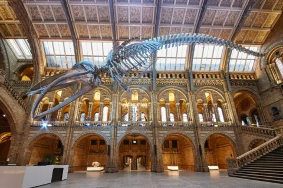

Colombo National Museum
An immersive encounter with the ocean's last giant
Begin the ExperienceThe Colombo National Museum, founded in 1877, stands as Sri Lanka's largest and most significant museum. Within its storied halls rests one of the rarest treasures in the natural world — the skeletal remains of a blue whale, the largest creature ever to have lived on Earth.
Beneath the Bones is a multi-sensory digital experience designed to bring this ancient giant back to life. Through sight, sound, and touch, visitors are invited to step beyond the skeleton and feel the living presence of the blue whale — its movement, its voice, its sheer enormity.